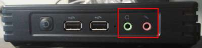

第7课 学会电脑硬件使用耳机
0、学会连接耳机和播放音乐；
1、电脑的硬件分为CPU、存储器、输入设备、输出设备；
2、耳机接在耳机插孔里，耳机图标 和麦克风图标
和麦克风图标 ，
， 旁边长方形的是USB接口，看形状也可以区分；

3、接上耳机，耳机插头一般是绿色，麦克风红色；
4、右上角，点小喇叭音量，调到一半左右；
5、本地播放，打开“主文件夹-音乐”，双击音乐文件，打开音乐播放器；
6、出来的音乐播放器里，找到播放和暂停，播放列表，进度条；
7、在线网页播放，新标签，“素材-HTML5播放器”，点播放按钮，自动播放；
本节学习了的基础知识，如果你成功地完成了练习，请继续学习下一课内容；
返回目录 下一课
本教程由TeliuTe制作|著作权所有
基础教程网：http://teliute.org/
美丽的校园……
转载和引用本站内容，请保留作者和本站链接。